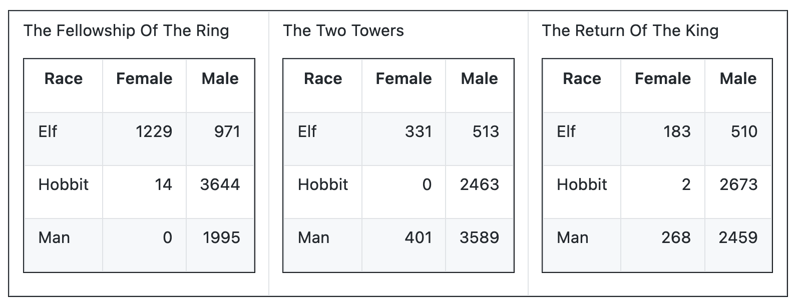
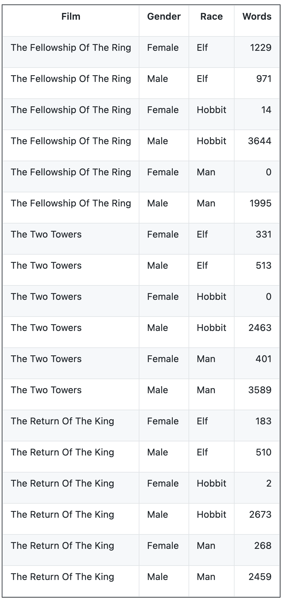

Lecture 4: Many more complicated data things¶
logarithms review
bivariate summary statistics, and groupby.apply
joining data frames
melting/pivoting long-to-wide and wide-to-long
import pandas as pd
import numpy as np
import matplotlib.pyplot as plt
gapminder = pd.read_csv('../datasets/gapminder.csv')
# download here:
# https://raw.githubusercontent.com/UCSD-CSS-001/ucsd-css-001.github.io/main/datasets/gapminder.csv
gapminder = gapminder.drop(columns = ['Unnamed: 0'])
gapminder
| country | continent | year | lifeExp | pop | gdpPercap | |
|---|---|---|---|---|---|---|
| 0 | Afghanistan | Asia | 1952 | 28.801 | 8425333 | 779.445314 |
| 1 | Afghanistan | Asia | 1957 | 30.332 | 9240934 | 820.853030 |
| 2 | Afghanistan | Asia | 1962 | 31.997 | 10267083 | 853.100710 |
| 3 | Afghanistan | Asia | 1967 | 34.020 | 11537966 | 836.197138 |
| 4 | Afghanistan | Asia | 1972 | 36.088 | 13079460 | 739.981106 |
| ... | ... | ... | ... | ... | ... | ... |
| 1699 | Zimbabwe | Africa | 1987 | 62.351 | 9216418 | 706.157306 |
| 1700 | Zimbabwe | Africa | 1992 | 60.377 | 10704340 | 693.420786 |
| 1701 | Zimbabwe | Africa | 1997 | 46.809 | 11404948 | 792.449960 |
| 1702 | Zimbabwe | Africa | 2002 | 39.989 | 11926563 | 672.038623 |
| 1703 | Zimbabwe | Africa | 2007 | 43.487 | 12311143 | 469.709298 |
1704 rows × 6 columns
Summary statistics¶
the wonders of logarithms.¶
f = plt.hist(gapminder[gapminder['year']==2007]['pop'])
f = plt.xlabel('population')
f = plt.ylabel('count of countries')
f = plt.title('Histogram of country populations')
gapminder[gapminder['year']==2007]['pop'].median()
10517531.0
Yikes! Most standard statistics do not work well with data like this. Standard statistics are designed for roughly normal (i.e., gaussian, bell-shaped) distributions.
Fortunately, lots of variables, like population, wealth, income, gdp, etc. are roughly log-normally distributed. Meaning their logarithm is normal.
So we can do standard statistics with them after log-transforming
freq, bins, _ = plt.hist(gapminder[gapminder['year']==2007]['pop'],
bins = np.logspace(5, 9.2, num=15, base=10))
f = plt.xlabel('population')
f = plt.ylabel('count of countries')
f = plt.title('Histogram of country populations')
f = plt.xscale('log')
np.logspace(5, 9, num=10, base=10)
array([1.00000000e+05, 2.78255940e+05, 7.74263683e+05, 2.15443469e+06,
5.99484250e+06, 1.66810054e+07, 4.64158883e+07, 1.29154967e+08,
3.59381366e+08, 1.00000000e+09])
mean, median, mode, stdev, var, etc.¶
populations_in_2007 = gapminder[gapminder['year']==2007]['pop']
print(populations_in_2007.mean()) # sum / count
print(populations_in_2007.median()) # number such that 50% are higher and 50% are lower
44021219.57042254
10517531.0
print(populations_in_2007.mode()) # does not make sense for numbers.
0 199579
1 301931
2 496374
3 551201
4 684736
...
137 190010647
138 223547000
139 301139947
140 1110396331
141 1318683096
Length: 142, dtype: int64
gapminder['continent'].mode() # makes sense for categorical
0 Africa
dtype: object
populations_in_2007.std()
147621397.90361592
populations_in_2007.var()**(1/2)
147621397.90361592
weighted statistcs¶
populations_in_2007.mean()
44021219.57042254
def custom_mean(nparray):
return sum(nparray)/len(nparray)
custom_mean(populations_in_2007)
44021219.57042254
gm_2007 = gapminder[gapminder['year']==2007]
gm_2007
| country | continent | year | lifeExp | pop | gdpPercap | |
|---|---|---|---|---|---|---|
| 11 | Afghanistan | Asia | 2007 | 43.828 | 31889923 | 974.580338 |
| 23 | Albania | Europe | 2007 | 76.423 | 3600523 | 5937.029526 |
| 35 | Algeria | Africa | 2007 | 72.301 | 33333216 | 6223.367465 |
| 47 | Angola | Africa | 2007 | 42.731 | 12420476 | 4797.231267 |
| 59 | Argentina | Americas | 2007 | 75.320 | 40301927 | 12779.379640 |
| ... | ... | ... | ... | ... | ... | ... |
| 1655 | Vietnam | Asia | 2007 | 74.249 | 85262356 | 2441.576404 |
| 1667 | West Bank and Gaza | Asia | 2007 | 73.422 | 4018332 | 3025.349798 |
| 1679 | Yemen, Rep. | Asia | 2007 | 62.698 | 22211743 | 2280.769906 |
| 1691 | Zambia | Africa | 2007 | 42.384 | 11746035 | 1271.211593 |
| 1703 | Zimbabwe | Africa | 2007 | 43.487 | 12311143 | 469.709298 |
142 rows × 6 columns
gm_2007['gdpPercap'].mean()
11680.071819878172
x = [1, 2, 3, 4]
print(len(x))
print(sum([1, 1, 1, 1]))
4
4
def weighted_mean(values, weights):
# works for numpy arrays.
return sum(values * weights) / sum(weights)
x = [1, 2, 3, 4]
w = [1, 1, 1, 10]
# sum: 46 / denominator: 13
# [1, 2, 3, 4, 4, 4, 4, 4, 4, 4, 4, 4, 4]
weighted_mean(np.array(x), np.array(w))
3.5384615384615383
# not the same
x = [1, 2, 3, 40]
w = [1, 1, 1, 1]
# sum = 46 denominator: 4
weighted_mean(np.array(x), np.array(w))
11.5
# population-weighted average of gdp per capita
weighted_mean(gm_2007['gdpPercap'], gm_2007['pop'])
9295.986594480439
bivariate statistics¶
consider life expectancy ~ gdp per capita
gm_2007
| country | continent | year | lifeExp | pop | gdpPercap | |
|---|---|---|---|---|---|---|
| 11 | Afghanistan | Asia | 2007 | 43.828 | 31889923 | 974.580338 |
| 23 | Albania | Europe | 2007 | 76.423 | 3600523 | 5937.029526 |
| 35 | Algeria | Africa | 2007 | 72.301 | 33333216 | 6223.367465 |
| 47 | Angola | Africa | 2007 | 42.731 | 12420476 | 4797.231267 |
| 59 | Argentina | Americas | 2007 | 75.320 | 40301927 | 12779.379640 |
| ... | ... | ... | ... | ... | ... | ... |
| 1655 | Vietnam | Asia | 2007 | 74.249 | 85262356 | 2441.576404 |
| 1667 | West Bank and Gaza | Asia | 2007 | 73.422 | 4018332 | 3025.349798 |
| 1679 | Yemen, Rep. | Asia | 2007 | 62.698 | 22211743 | 2280.769906 |
| 1691 | Zambia | Africa | 2007 | 42.384 | 11746035 | 1271.211593 |
| 1703 | Zimbabwe | Africa | 2007 | 43.487 | 12311143 | 469.709298 |
142 rows × 6 columns
plt.scatter(gm_2007['gdpPercap'], gm_2007['lifeExp'])
plt.xscale('log')
plt.xlabel('gdp per capita')
plt.ylabel('life expectancy in 2007')
Text(0, 0.5, 'life expectancy in 2007')
# why we are log transforming gdp
f = plt.hist(np.log10(gm_2007['gdpPercap']))
correlation¶
we want to calculate the correlation between log10(gdpPercap) and life Exp
def cor(x,y):
mx = x.mean()
my = y.mean()
sx = x.std()
sy = y.std()
zx = (x-mx)/sx
zy = (y-my)/sy
return (zx*zy).sum() / (len(zx)-1)
cor(np.log10(gm_2007['gdpPercap']), gm_2007['lifeExp'])
0.8089802514849214
x = np.log10(gm_2007['gdpPercap'])
y = gm_2007['lifeExp']
np.corrcoef(x, y)[0,1]
0.8089802514849209
gm_2007['lifeExp'].corr(np.log10(gm_2007['gdpPercap']))
0.808980251484921
# r^2, coefficient of determination,
gm_2007['lifeExp'].corr(np.log10(gm_2007['gdpPercap']))**2
0.6544490472926061
regression line¶
x = np.log10(gm_2007['gdpPercap'])
y = gm_2007['lifeExp']
fit = np.polyfit(x,y,1)
slope = fit[0]
intercept = fit[1]
print(f'{slope=}, {intercept=}')
slope=16.58506352520344, intercept=4.949611651060741
np.corrcoef(x, y)[0,1]
0.8089802514849209
# predictions from our fitted line
new_x = np.linspace(2, 5.2, 10)
predicted_y = new_x*slope + intercept
plt.scatter(x, y)
plt.xlabel('log10(gdp per capita)')
plt.ylabel('life expectancy in 2007')
plt.plot(new_x, predicted_y,'r-')
[<matplotlib.lines.Line2D at 0x7fbb8698cc40>]
plt.scatter(gm_2007['gdpPercap'], gm_2007['lifeExp'])
plt.xscale('log')
plt.xlabel('gdp per capita')
plt.ylabel('life expectancy in 2007')
plt.plot(10**new_x, predicted_y, 'r-')
# log10 gdp per cap
[<matplotlib.lines.Line2D at 0x7fbb86fbb130>]
Advanced summarization via groupby.apply¶
consider life expectancy ~ gdp per capita by continent (by year)
gapminder
| country | continent | year | lifeExp | pop | gdpPercap | |
|---|---|---|---|---|---|---|
| 0 | Afghanistan | Asia | 1952 | 28.801 | 8425333 | 779.445314 |
| 1 | Afghanistan | Asia | 1957 | 30.332 | 9240934 | 820.853030 |
| 2 | Afghanistan | Asia | 1962 | 31.997 | 10267083 | 853.100710 |
| 3 | Afghanistan | Asia | 1967 | 34.020 | 11537966 | 836.197138 |
| 4 | Afghanistan | Asia | 1972 | 36.088 | 13079460 | 739.981106 |
| ... | ... | ... | ... | ... | ... | ... |
| 1699 | Zimbabwe | Africa | 1987 | 62.351 | 9216418 | 706.157306 |
| 1700 | Zimbabwe | Africa | 1992 | 60.377 | 10704340 | 693.420786 |
| 1701 | Zimbabwe | Africa | 1997 | 46.809 | 11404948 | 792.449960 |
| 1702 | Zimbabwe | Africa | 2002 | 39.989 | 11926563 | 672.038623 |
| 1703 | Zimbabwe | Africa | 2007 | 43.487 | 12311143 | 469.709298 |
1704 rows × 6 columns
# calculate correlation of log10(gdpPercap) and lifeExp for each year
gapminder.groupby('year').agg(mean_life = ('lifeExp', 'mean'))
| mean_life | |
|---|---|
| year | |
| 1952 | 49.057620 |
| 1957 | 51.507401 |
| 1962 | 53.609249 |
| 1967 | 55.678290 |
| 1972 | 57.647386 |
| 1977 | 59.570157 |
| 1982 | 61.533197 |
| 1987 | 63.212613 |
| 1992 | 64.160338 |
| 1997 | 65.014676 |
| 2002 | 65.694923 |
| 2007 | 67.007423 |
def summary_function(df):
return np.corrcoef(np.log10(df['gdpPercap']), df['lifeExp'])[0,1]
for grp_name, grp_df in gapminder.groupby('year'):
print(grp_name, summary_function(grp_df))
1952 0.7477807347946165
1957 0.758795706016415
1962 0.7705225443103859
1967 0.7729986641186484
1972 0.789405727501936
1977 0.8135258808158442
1982 0.846073426279085
1987 0.8743940682796121
1992 0.8558149463091763
1997 0.8640205504436029
2002 0.8251326766424232
2007 0.8089802514849209
gapminder.groupby('year').apply(summary_function)
year
1952 0.747781
1957 0.758796
1962 0.770523
1967 0.772999
1972 0.789406
1977 0.813526
1982 0.846073
1987 0.874394
1992 0.855815
1997 0.864021
2002 0.825133
2007 0.808980
dtype: float64
def summary_function(df):
r = np.corrcoef(np.log10(df['gdpPercap']), df['lifeExp'])[0,1]
fit = np.polyfit(np.log10(df['gdpPercap']),df['lifeExp'],1)
slope = fit[0]
intercept = fit[1]
return pd.Series({'correlation':r,
'slope': slope})
summary_function(gapminder)
correlation 0.807618
slope 19.353423
dtype: float64
gapminder.groupby('year').apply(summary_function)
| correlation | slope | |
|---|---|---|
| year | ||
| 1952 | 0.747781 | 20.331397 |
| 1957 | 0.758796 | 20.102944 |
| 1962 | 0.770523 | 19.797228 |
| 1967 | 0.772999 | 18.535251 |
| 1972 | 0.789406 | 17.493729 |
| 1977 | 0.813526 | 17.382310 |
| 1982 | 0.846073 | 17.254635 |
| 1987 | 0.874394 | 16.966816 |
| 1992 | 0.855815 | 17.327658 |
| 1997 | 0.864021 | 17.529894 |
| 2002 | 0.825133 | 17.539257 |
| 2007 | 0.808980 | 16.585064 |
Joining data frames.¶
inner, outer, left, right
instructors = pd.DataFrame({'name':['Ed Vul', 'Drew Walker', 'Shannon Ellis', 'Erik Brockbank', 'Judy Fan'],
'email': ['evul@ucsd.edu','drew@fake.com', 'shannon@fake.com', 'erik@fake.com', 'judy@fake.com'],
'location': ['McGill 5137', 'COGS 563', 'COGS 123', 'Mandler 3509', 'McGill 5139?']})
classes = pd.DataFrame({'name':['CSS 1', 'CSS 2', 'COGS 18', 'PSYC 201', 'PSYC 60', 'COGS 9', 'PSYC 100'],
'location': ['mandler', 'mcgill', 'cog sci', 'mcgill', 'peterson', 'cog sci', 'auditorium'],
'instructor_name':['Ed Vul', 'Ed Vul', 'Shannon Ellis', 'Ed Vul', 'Judy Fan', 'Drew Walker', 'John Serences']})
instructors
| name | location | ||
|---|---|---|---|
| 0 | Ed Vul | evul@ucsd.edu | McGill 5137 |
| 1 | Drew Walker | drew@fake.com | COGS 563 |
| 2 | Shannon Ellis | shannon@fake.com | COGS 123 |
| 3 | Erik Brockbank | erik@fake.com | Mandler 3509 |
| 4 | Judy Fan | judy@fake.com | McGill 5139? |
classes
| name | location | instructor_name | |
|---|---|---|---|
| 0 | CSS 1 | mandler | Ed Vul |
| 1 | CSS 2 | mcgill | Ed Vul |
| 2 | COGS 18 | cog sci | Shannon Ellis |
| 3 | PSYC 201 | mcgill | Ed Vul |
| 4 | PSYC 60 | peterson | Judy Fan |
| 5 | COGS 9 | cog sci | Drew Walker |
| 6 | PSYC 100 | auditorium | John Serences |
pd.merge(instructors,
classes,
# either one 'on'
left_on = 'name',
right_on='instructor_name',
how='inner',
suffixes=['_prof', '_class'])
| name_prof | location_prof | name_class | location_class | instructor_name | ||
|---|---|---|---|---|---|---|
| 0 | Ed Vul | evul@ucsd.edu | McGill 5137 | CSS 1 | mandler | Ed Vul |
| 1 | Ed Vul | evul@ucsd.edu | McGill 5137 | CSS 2 | mcgill | Ed Vul |
| 2 | Ed Vul | evul@ucsd.edu | McGill 5137 | PSYC 201 | mcgill | Ed Vul |
| 3 | Drew Walker | drew@fake.com | COGS 563 | COGS 9 | cog sci | Drew Walker |
| 4 | Shannon Ellis | shannon@fake.com | COGS 123 | COGS 18 | cog sci | Shannon Ellis |
| 5 | Judy Fan | judy@fake.com | McGill 5139? | PSYC 60 | peterson | Judy Fan |
instructors = pd.DataFrame({'instructor_name':['Ed Vul', 'Drew Walker', 'Shannon Ellis', 'Erik Brockbank', 'Judy Fan'],
'email': ['evul@ucsd.edu','drew@fake.com', 'shannon@fake.com', 'erik@fake.com', 'judy@fake.com'],
'office': ['McGill 5137', 'COGS 563', 'COGS 123', 'Mandler 3509', 'McGill 5139?']})
classes = pd.DataFrame({'class_name':['CSS 1', 'CSS 2', 'COGS 18', 'PSYC 201', 'PSYC 60', 'COGS 9', 'PSYC 100'],
'location': ['mandler', 'mcgill', 'cog sci', 'mcgill', 'peterson', 'cog sci', 'auditorium'],
'instructor_name':['Ed Vul', 'Ed Vul', 'Shannon Ellis', 'Ed Vul', 'Judy Fan', 'Drew Walker', 'John Serences']})
instructors
| instructor_name | office | ||
|---|---|---|---|
| 0 | Ed Vul | evul@ucsd.edu | McGill 5137 |
| 1 | Drew Walker | drew@fake.com | COGS 563 |
| 2 | Shannon Ellis | shannon@fake.com | COGS 123 |
| 3 | Erik Brockbank | erik@fake.com | Mandler 3509 |
| 4 | Judy Fan | judy@fake.com | McGill 5139? |
classes
| class_name | location | instructor_name | |
|---|---|---|---|
| 0 | CSS 1 | mandler | Ed Vul |
| 1 | CSS 2 | mcgill | Ed Vul |
| 2 | COGS 18 | cog sci | Shannon Ellis |
| 3 | PSYC 201 | mcgill | Ed Vul |
| 4 | PSYC 60 | peterson | Judy Fan |
| 5 | COGS 9 | cog sci | Drew Walker |
| 6 | PSYC 100 | auditorium | John Serences |
pd.merge(classes,
instructors,
on='instructor_name',
how='inner')
| class_name | location | instructor_name | office | ||
|---|---|---|---|---|---|
| 0 | CSS 1 | mandler | Ed Vul | evul@ucsd.edu | McGill 5137 |
| 1 | CSS 2 | mcgill | Ed Vul | evul@ucsd.edu | McGill 5137 |
| 2 | PSYC 201 | mcgill | Ed Vul | evul@ucsd.edu | McGill 5137 |
| 3 | COGS 18 | cog sci | Shannon Ellis | shannon@fake.com | COGS 123 |
| 4 | PSYC 60 | peterson | Judy Fan | judy@fake.com | McGill 5139? |
| 5 | COGS 9 | cog sci | Drew Walker | drew@fake.com | COGS 563 |
pd.merge(classes,
instructors,
on='instructor_name',
how='left')
| class_name | location | instructor_name | office | ||
|---|---|---|---|---|---|
| 0 | CSS 1 | mandler | Ed Vul | evul@ucsd.edu | McGill 5137 |
| 1 | CSS 2 | mcgill | Ed Vul | evul@ucsd.edu | McGill 5137 |
| 2 | COGS 18 | cog sci | Shannon Ellis | shannon@fake.com | COGS 123 |
| 3 | PSYC 201 | mcgill | Ed Vul | evul@ucsd.edu | McGill 5137 |
| 4 | PSYC 60 | peterson | Judy Fan | judy@fake.com | McGill 5139? |
| 5 | COGS 9 | cog sci | Drew Walker | drew@fake.com | COGS 563 |
| 6 | PSYC 100 | auditorium | John Serences | NaN | NaN |
pd.merge(classes,
instructors,
on='instructor_name',
how='right')
| class_name | location | instructor_name | office | ||
|---|---|---|---|---|---|
| 0 | CSS 1 | mandler | Ed Vul | evul@ucsd.edu | McGill 5137 |
| 1 | CSS 2 | mcgill | Ed Vul | evul@ucsd.edu | McGill 5137 |
| 2 | PSYC 201 | mcgill | Ed Vul | evul@ucsd.edu | McGill 5137 |
| 3 | COGS 9 | cog sci | Drew Walker | drew@fake.com | COGS 563 |
| 4 | COGS 18 | cog sci | Shannon Ellis | shannon@fake.com | COGS 123 |
| 5 | NaN | NaN | Erik Brockbank | erik@fake.com | Mandler 3509 |
| 6 | PSYC 60 | peterson | Judy Fan | judy@fake.com | McGill 5139? |
pd.merge(classes,
instructors,
on='instructor_name',
how='outer')
| class_name | location | instructor_name | office | ||
|---|---|---|---|---|---|
| 0 | CSS 1 | mandler | Ed Vul | evul@ucsd.edu | McGill 5137 |
| 1 | CSS 2 | mcgill | Ed Vul | evul@ucsd.edu | McGill 5137 |
| 2 | PSYC 201 | mcgill | Ed Vul | evul@ucsd.edu | McGill 5137 |
| 3 | COGS 18 | cog sci | Shannon Ellis | shannon@fake.com | COGS 123 |
| 4 | PSYC 60 | peterson | Judy Fan | judy@fake.com | McGill 5139? |
| 5 | COGS 9 | cog sci | Drew Walker | drew@fake.com | COGS 563 |
| 6 | PSYC 100 | auditorium | John Serences | NaN | NaN |
| 7 | NaN | NaN | Erik Brockbank | erik@fake.com | Mandler 3509 |
Reshaping / pivoting / tidy / long-wide transforms¶
https://pandas.pydata.org/pandas-docs/stable/user_guide/reshaping.html#reshaping-by-melt
Wide data¶

Long data¶

back to gapminder
gapminder
| country | continent | year | lifeExp | pop | gdpPercap | |
|---|---|---|---|---|---|---|
| 0 | Afghanistan | Asia | 1952 | 28.801 | 8425333 | 779.445314 |
| 1 | Afghanistan | Asia | 1957 | 30.332 | 9240934 | 820.853030 |
| 2 | Afghanistan | Asia | 1962 | 31.997 | 10267083 | 853.100710 |
| 3 | Afghanistan | Asia | 1967 | 34.020 | 11537966 | 836.197138 |
| 4 | Afghanistan | Asia | 1972 | 36.088 | 13079460 | 739.981106 |
| ... | ... | ... | ... | ... | ... | ... |
| 1699 | Zimbabwe | Africa | 1987 | 62.351 | 9216418 | 706.157306 |
| 1700 | Zimbabwe | Africa | 1992 | 60.377 | 10704340 | 693.420786 |
| 1701 | Zimbabwe | Africa | 1997 | 46.809 | 11404948 | 792.449960 |
| 1702 | Zimbabwe | Africa | 2002 | 39.989 | 11926563 | 672.038623 |
| 1703 | Zimbabwe | Africa | 2007 | 43.487 | 12311143 | 469.709298 |
1704 rows × 6 columns
long to wide¶
unstack (via index)
pivot (via column names)
need to deal with multi-index
https://pandas.pydata.org/pandas-docs/stable/user_guide/advanced.html
Goal: See how mean life expectancy in Europe and Asia has changed over the years.
Output: A scatterplot over time, with x: mean life expectancy in europe, and y: mean life expectnacy in Asia, and each data point is a year.
Process:
group by continent and year, and calculate mean life expectancy
convert long to wide format, with one column per continent
summary_data = (gapminder
.groupby(['continent', 'year'])
.agg(m_lifeExp = ('lifeExp', 'mean'),
s_lifeExp = ('lifeExp', 'std')))
summary_data
| m_lifeExp | s_lifeExp | ||
|---|---|---|---|
| continent | year | ||
| Africa | 1952 | 39.135500 | 5.151581 |
| 1957 | 41.266346 | 5.620123 | |
| 1962 | 43.319442 | 5.875364 | |
| 1967 | 45.334538 | 6.082673 | |
| 1972 | 47.450942 | 6.416258 | |
| 1977 | 49.580423 | 6.808197 | |
| 1982 | 51.592865 | 7.375940 | |
| 1987 | 53.344788 | 7.864089 | |
| 1992 | 53.629577 | 9.461071 | |
| 1997 | 53.598269 | 9.103387 | |
| 2002 | 53.325231 | 9.586496 | |
| 2007 | 54.806038 | 9.630781 | |
| Americas | 1952 | 53.279840 | 9.326082 |
| 1957 | 55.960280 | 9.033192 | |
| 1962 | 58.398760 | 8.503544 | |
| 1967 | 60.410920 | 7.909171 | |
| 1972 | 62.394920 | 7.323017 | |
| 1977 | 64.391560 | 7.069496 | |
| 1982 | 66.228840 | 6.720834 | |
| 1987 | 68.090720 | 5.801929 | |
| 1992 | 69.568360 | 5.167104 | |
| 1997 | 71.150480 | 4.887584 | |
| 2002 | 72.422040 | 4.799705 | |
| 2007 | 73.608120 | 4.440948 | |
| Asia | 1952 | 46.314394 | 9.291751 |
| 1957 | 49.318544 | 9.635429 | |
| 1962 | 51.563223 | 9.820632 | |
| 1967 | 54.663640 | 9.650965 | |
| 1972 | 57.319269 | 9.722700 | |
| 1977 | 59.610556 | 10.022197 | |
| 1982 | 62.617939 | 8.535221 | |
| 1987 | 64.851182 | 8.203792 | |
| 1992 | 66.537212 | 8.075549 | |
| 1997 | 68.020515 | 8.091171 | |
| 2002 | 69.233879 | 8.374595 | |
| 2007 | 70.728485 | 7.963724 | |
| Europe | 1952 | 64.408500 | 6.361088 |
| 1957 | 66.703067 | 5.295805 | |
| 1962 | 68.539233 | 4.302500 | |
| 1967 | 69.737600 | 3.799728 | |
| 1972 | 70.775033 | 3.240576 | |
| 1977 | 71.937767 | 3.121030 | |
| 1982 | 72.806400 | 3.218260 | |
| 1987 | 73.642167 | 3.169680 | |
| 1992 | 74.440100 | 3.209781 | |
| 1997 | 75.505167 | 3.104677 | |
| 2002 | 76.700600 | 2.922180 | |
| 2007 | 77.648600 | 2.979813 | |
| Oceania | 1952 | 69.255000 | 0.190919 |
| 1957 | 70.295000 | 0.049497 | |
| 1962 | 71.085000 | 0.219203 | |
| 1967 | 71.310000 | 0.296985 | |
| 1972 | 71.910000 | 0.028284 | |
| 1977 | 72.855000 | 0.898026 | |
| 1982 | 74.290000 | 0.636396 | |
| 1987 | 75.320000 | 1.414214 | |
| 1992 | 76.945000 | 0.869741 | |
| 1997 | 78.190000 | 0.905097 | |
| 2002 | 79.740000 | 0.890955 | |
| 2007 | 80.719500 | 0.729027 |
# via unstacking by index
summary_data.unstack('continent')
| m_lifeExp | s_lifeExp | |||||||||
|---|---|---|---|---|---|---|---|---|---|---|
| continent | Africa | Americas | Asia | Europe | Oceania | Africa | Americas | Asia | Europe | Oceania |
| year | ||||||||||
| 1952 | 39.135500 | 53.27984 | 46.314394 | 64.408500 | 69.2550 | 5.151581 | 9.326082 | 9.291751 | 6.361088 | 0.190919 |
| 1957 | 41.266346 | 55.96028 | 49.318544 | 66.703067 | 70.2950 | 5.620123 | 9.033192 | 9.635429 | 5.295805 | 0.049497 |
| 1962 | 43.319442 | 58.39876 | 51.563223 | 68.539233 | 71.0850 | 5.875364 | 8.503544 | 9.820632 | 4.302500 | 0.219203 |
| 1967 | 45.334538 | 60.41092 | 54.663640 | 69.737600 | 71.3100 | 6.082673 | 7.909171 | 9.650965 | 3.799728 | 0.296985 |
| 1972 | 47.450942 | 62.39492 | 57.319269 | 70.775033 | 71.9100 | 6.416258 | 7.323017 | 9.722700 | 3.240576 | 0.028284 |
| 1977 | 49.580423 | 64.39156 | 59.610556 | 71.937767 | 72.8550 | 6.808197 | 7.069496 | 10.022197 | 3.121030 | 0.898026 |
| 1982 | 51.592865 | 66.22884 | 62.617939 | 72.806400 | 74.2900 | 7.375940 | 6.720834 | 8.535221 | 3.218260 | 0.636396 |
| 1987 | 53.344788 | 68.09072 | 64.851182 | 73.642167 | 75.3200 | 7.864089 | 5.801929 | 8.203792 | 3.169680 | 1.414214 |
| 1992 | 53.629577 | 69.56836 | 66.537212 | 74.440100 | 76.9450 | 9.461071 | 5.167104 | 8.075549 | 3.209781 | 0.869741 |
| 1997 | 53.598269 | 71.15048 | 68.020515 | 75.505167 | 78.1900 | 9.103387 | 4.887584 | 8.091171 | 3.104677 | 0.905097 |
| 2002 | 53.325231 | 72.42204 | 69.233879 | 76.700600 | 79.7400 | 9.586496 | 4.799705 | 8.374595 | 2.922180 | 0.890955 |
| 2007 | 54.806038 | 73.60812 | 70.728485 | 77.648600 | 80.7195 | 9.630781 | 4.440948 | 7.963724 | 2.979813 | 0.729027 |
summary_data['m_lifeExp']['Asia']
year
1952 46.314394
1957 49.318544
1962 51.563223
1967 54.663640
1972 57.319269
1977 59.610556
1982 62.617939
1987 64.851182
1992 66.537212
1997 68.020515
2002 69.233879
2007 70.728485
Name: m_lifeExp, dtype: float64
summary_data = (gapminder.groupby(['continent', 'year'])
.agg(m_lifeExp = ('lifeExp', 'mean'))
.reset_index())
summary_data
| continent | year | m_lifeExp | |
|---|---|---|---|
| 0 | Africa | 1952 | 39.135500 |
| 1 | Africa | 1957 | 41.266346 |
| 2 | Africa | 1962 | 43.319442 |
| 3 | Africa | 1967 | 45.334538 |
| 4 | Africa | 1972 | 47.450942 |
| 5 | Africa | 1977 | 49.580423 |
| 6 | Africa | 1982 | 51.592865 |
| 7 | Africa | 1987 | 53.344788 |
| 8 | Africa | 1992 | 53.629577 |
| 9 | Africa | 1997 | 53.598269 |
| 10 | Africa | 2002 | 53.325231 |
| 11 | Africa | 2007 | 54.806038 |
| 12 | Americas | 1952 | 53.279840 |
| 13 | Americas | 1957 | 55.960280 |
| 14 | Americas | 1962 | 58.398760 |
| 15 | Americas | 1967 | 60.410920 |
| 16 | Americas | 1972 | 62.394920 |
| 17 | Americas | 1977 | 64.391560 |
| 18 | Americas | 1982 | 66.228840 |
| 19 | Americas | 1987 | 68.090720 |
| 20 | Americas | 1992 | 69.568360 |
| 21 | Americas | 1997 | 71.150480 |
| 22 | Americas | 2002 | 72.422040 |
| 23 | Americas | 2007 | 73.608120 |
| 24 | Asia | 1952 | 46.314394 |
| 25 | Asia | 1957 | 49.318544 |
| 26 | Asia | 1962 | 51.563223 |
| 27 | Asia | 1967 | 54.663640 |
| 28 | Asia | 1972 | 57.319269 |
| 29 | Asia | 1977 | 59.610556 |
| 30 | Asia | 1982 | 62.617939 |
| 31 | Asia | 1987 | 64.851182 |
| 32 | Asia | 1992 | 66.537212 |
| 33 | Asia | 1997 | 68.020515 |
| 34 | Asia | 2002 | 69.233879 |
| 35 | Asia | 2007 | 70.728485 |
| 36 | Europe | 1952 | 64.408500 |
| 37 | Europe | 1957 | 66.703067 |
| 38 | Europe | 1962 | 68.539233 |
| 39 | Europe | 1967 | 69.737600 |
| 40 | Europe | 1972 | 70.775033 |
| 41 | Europe | 1977 | 71.937767 |
| 42 | Europe | 1982 | 72.806400 |
| 43 | Europe | 1987 | 73.642167 |
| 44 | Europe | 1992 | 74.440100 |
| 45 | Europe | 1997 | 75.505167 |
| 46 | Europe | 2002 | 76.700600 |
| 47 | Europe | 2007 | 77.648600 |
| 48 | Oceania | 1952 | 69.255000 |
| 49 | Oceania | 1957 | 70.295000 |
| 50 | Oceania | 1962 | 71.085000 |
| 51 | Oceania | 1967 | 71.310000 |
| 52 | Oceania | 1972 | 71.910000 |
| 53 | Oceania | 1977 | 72.855000 |
| 54 | Oceania | 1982 | 74.290000 |
| 55 | Oceania | 1987 | 75.320000 |
| 56 | Oceania | 1992 | 76.945000 |
| 57 | Oceania | 1997 | 78.190000 |
| 58 | Oceania | 2002 | 79.740000 |
| 59 | Oceania | 2007 | 80.719500 |
# via column name and .pivot
summary_data.pivot(index='year',
columns='continent',
values='m_lifeExp')
| continent | Africa | Americas | Asia | Europe | Oceania |
|---|---|---|---|---|---|
| year | |||||
| 1952 | 39.135500 | 53.27984 | 46.314394 | 64.408500 | 69.2550 |
| 1957 | 41.266346 | 55.96028 | 49.318544 | 66.703067 | 70.2950 |
| 1962 | 43.319442 | 58.39876 | 51.563223 | 68.539233 | 71.0850 |
| 1967 | 45.334538 | 60.41092 | 54.663640 | 69.737600 | 71.3100 |
| 1972 | 47.450942 | 62.39492 | 57.319269 | 70.775033 | 71.9100 |
| 1977 | 49.580423 | 64.39156 | 59.610556 | 71.937767 | 72.8550 |
| 1982 | 51.592865 | 66.22884 | 62.617939 | 72.806400 | 74.2900 |
| 1987 | 53.344788 | 68.09072 | 64.851182 | 73.642167 | 75.3200 |
| 1992 | 53.629577 | 69.56836 | 66.537212 | 74.440100 | 76.9450 |
| 1997 | 53.598269 | 71.15048 | 68.020515 | 75.505167 | 78.1900 |
| 2002 | 53.325231 | 72.42204 | 69.233879 | 76.700600 | 79.7400 |
| 2007 | 54.806038 | 73.60812 | 70.728485 | 77.648600 | 80.7195 |
life_exp = (gapminder.groupby(['continent', 'year'])
.agg(m_lifeExp = ('lifeExp', 'mean'))
.unstack('continent'))
life_exp
| m_lifeExp | |||||
|---|---|---|---|---|---|
| continent | Africa | Americas | Asia | Europe | Oceania |
| year | |||||
| 1952 | 39.135500 | 53.27984 | 46.314394 | 64.408500 | 69.2550 |
| 1957 | 41.266346 | 55.96028 | 49.318544 | 66.703067 | 70.2950 |
| 1962 | 43.319442 | 58.39876 | 51.563223 | 68.539233 | 71.0850 |
| 1967 | 45.334538 | 60.41092 | 54.663640 | 69.737600 | 71.3100 |
| 1972 | 47.450942 | 62.39492 | 57.319269 | 70.775033 | 71.9100 |
| 1977 | 49.580423 | 64.39156 | 59.610556 | 71.937767 | 72.8550 |
| 1982 | 51.592865 | 66.22884 | 62.617939 | 72.806400 | 74.2900 |
| 1987 | 53.344788 | 68.09072 | 64.851182 | 73.642167 | 75.3200 |
| 1992 | 53.629577 | 69.56836 | 66.537212 | 74.440100 | 76.9450 |
| 1997 | 53.598269 | 71.15048 | 68.020515 | 75.505167 | 78.1900 |
| 2002 | 53.325231 | 72.42204 | 69.233879 | 76.700600 | 79.7400 |
| 2007 | 54.806038 | 73.60812 | 70.728485 | 77.648600 | 80.7195 |
plt.scatter(life_exp['m_lifeExp']['Europe'],
life_exp['m_lifeExp']['Asia'])
plt.plot([45, 80], [45, 80], 'r-')
plt.xlabel('Europe life expectancy')
plt.ylabel('Asia life expectancy')
Text(0, 0.5, 'Asia life expectancy')
wide to long¶
stacking (with indexes)
melt (with column names)
https://pandas.pydata.org/pandas-docs/stable/user_guide/reshaping.html#reshaping-by-melt
stacking (with indexes)¶
life_exp = (gapminder.groupby(['continent', 'year'])
.agg(m_lifeExp = ('lifeExp', 'mean'))
.unstack('continent'))
life_exp
| m_lifeExp | |||||
|---|---|---|---|---|---|
| continent | Africa | Americas | Asia | Europe | Oceania |
| year | |||||
| 1952 | 39.135500 | 53.27984 | 46.314394 | 64.408500 | 69.2550 |
| 1957 | 41.266346 | 55.96028 | 49.318544 | 66.703067 | 70.2950 |
| 1962 | 43.319442 | 58.39876 | 51.563223 | 68.539233 | 71.0850 |
| 1967 | 45.334538 | 60.41092 | 54.663640 | 69.737600 | 71.3100 |
| 1972 | 47.450942 | 62.39492 | 57.319269 | 70.775033 | 71.9100 |
| 1977 | 49.580423 | 64.39156 | 59.610556 | 71.937767 | 72.8550 |
| 1982 | 51.592865 | 66.22884 | 62.617939 | 72.806400 | 74.2900 |
| 1987 | 53.344788 | 68.09072 | 64.851182 | 73.642167 | 75.3200 |
| 1992 | 53.629577 | 69.56836 | 66.537212 | 74.440100 | 76.9450 |
| 1997 | 53.598269 | 71.15048 | 68.020515 | 75.505167 | 78.1900 |
| 2002 | 53.325231 | 72.42204 | 69.233879 | 76.700600 | 79.7400 |
| 2007 | 54.806038 | 73.60812 | 70.728485 | 77.648600 | 80.7195 |
# creates indexes
life_exp.stack()
| m_lifeExp | ||
|---|---|---|
| year | continent | |
| 1952 | Africa | 39.135500 |
| Americas | 53.279840 | |
| Asia | 46.314394 | |
| Europe | 64.408500 | |
| Oceania | 69.255000 | |
| 1957 | Africa | 41.266346 |
| Americas | 55.960280 | |
| Asia | 49.318544 | |
| Europe | 66.703067 | |
| Oceania | 70.295000 | |
| 1962 | Africa | 43.319442 |
| Americas | 58.398760 | |
| Asia | 51.563223 | |
| Europe | 68.539233 | |
| Oceania | 71.085000 | |
| 1967 | Africa | 45.334538 |
| Americas | 60.410920 | |
| Asia | 54.663640 | |
| Europe | 69.737600 | |
| Oceania | 71.310000 | |
| 1972 | Africa | 47.450942 |
| Americas | 62.394920 | |
| Asia | 57.319269 | |
| Europe | 70.775033 | |
| Oceania | 71.910000 | |
| 1977 | Africa | 49.580423 |
| Americas | 64.391560 | |
| Asia | 59.610556 | |
| Europe | 71.937767 | |
| Oceania | 72.855000 | |
| 1982 | Africa | 51.592865 |
| Americas | 66.228840 | |
| Asia | 62.617939 | |
| Europe | 72.806400 | |
| Oceania | 74.290000 | |
| 1987 | Africa | 53.344788 |
| Americas | 68.090720 | |
| Asia | 64.851182 | |
| Europe | 73.642167 | |
| Oceania | 75.320000 | |
| 1992 | Africa | 53.629577 |
| Americas | 69.568360 | |
| Asia | 66.537212 | |
| Europe | 74.440100 | |
| Oceania | 76.945000 | |
| 1997 | Africa | 53.598269 |
| Americas | 71.150480 | |
| Asia | 68.020515 | |
| Europe | 75.505167 | |
| Oceania | 78.190000 | |
| 2002 | Africa | 53.325231 |
| Americas | 72.422040 | |
| Asia | 69.233879 | |
| Europe | 76.700600 | |
| Oceania | 79.740000 | |
| 2007 | Africa | 54.806038 |
| Americas | 73.608120 | |
| Asia | 70.728485 | |
| Europe | 77.648600 | |
| Oceania | 80.719500 |
melting (column names)¶
life_exp = (gapminder.groupby(['continent', 'year'])
.agg(m_lifeExp = ('lifeExp', 'mean'))
.unstack('continent')['m_lifeExp'].reset_index())
life_exp
| continent | year | Africa | Americas | Asia | Europe | Oceania |
|---|---|---|---|---|---|---|
| 0 | 1952 | 39.135500 | 53.27984 | 46.314394 | 64.408500 | 69.2550 |
| 1 | 1957 | 41.266346 | 55.96028 | 49.318544 | 66.703067 | 70.2950 |
| 2 | 1962 | 43.319442 | 58.39876 | 51.563223 | 68.539233 | 71.0850 |
| 3 | 1967 | 45.334538 | 60.41092 | 54.663640 | 69.737600 | 71.3100 |
| 4 | 1972 | 47.450942 | 62.39492 | 57.319269 | 70.775033 | 71.9100 |
| 5 | 1977 | 49.580423 | 64.39156 | 59.610556 | 71.937767 | 72.8550 |
| 6 | 1982 | 51.592865 | 66.22884 | 62.617939 | 72.806400 | 74.2900 |
| 7 | 1987 | 53.344788 | 68.09072 | 64.851182 | 73.642167 | 75.3200 |
| 8 | 1992 | 53.629577 | 69.56836 | 66.537212 | 74.440100 | 76.9450 |
| 9 | 1997 | 53.598269 | 71.15048 | 68.020515 | 75.505167 | 78.1900 |
| 10 | 2002 | 53.325231 | 72.42204 | 69.233879 | 76.700600 | 79.7400 |
| 11 | 2007 | 54.806038 | 73.60812 | 70.728485 | 77.648600 | 80.7195 |
life_exp.melt(id_vars = ('year'),
value_vars = ['Africa', 'Americas', 'Asia', 'Europe', 'Oceania'],
var_name = 'continent',
value_name = 'mean_life_expectancy')
| year | continent | mean_life_expectancy | |
|---|---|---|---|
| 0 | 1952 | Africa | 39.135500 |
| 1 | 1957 | Africa | 41.266346 |
| 2 | 1962 | Africa | 43.319442 |
| 3 | 1967 | Africa | 45.334538 |
| 4 | 1972 | Africa | 47.450942 |
| 5 | 1977 | Africa | 49.580423 |
| 6 | 1982 | Africa | 51.592865 |
| 7 | 1987 | Africa | 53.344788 |
| 8 | 1992 | Africa | 53.629577 |
| 9 | 1997 | Africa | 53.598269 |
| 10 | 2002 | Africa | 53.325231 |
| 11 | 2007 | Africa | 54.806038 |
| 12 | 1952 | Americas | 53.279840 |
| 13 | 1957 | Americas | 55.960280 |
| 14 | 1962 | Americas | 58.398760 |
| 15 | 1967 | Americas | 60.410920 |
| 16 | 1972 | Americas | 62.394920 |
| 17 | 1977 | Americas | 64.391560 |
| 18 | 1982 | Americas | 66.228840 |
| 19 | 1987 | Americas | 68.090720 |
| 20 | 1992 | Americas | 69.568360 |
| 21 | 1997 | Americas | 71.150480 |
| 22 | 2002 | Americas | 72.422040 |
| 23 | 2007 | Americas | 73.608120 |
| 24 | 1952 | Asia | 46.314394 |
| 25 | 1957 | Asia | 49.318544 |
| 26 | 1962 | Asia | 51.563223 |
| 27 | 1967 | Asia | 54.663640 |
| 28 | 1972 | Asia | 57.319269 |
| 29 | 1977 | Asia | 59.610556 |
| 30 | 1982 | Asia | 62.617939 |
| 31 | 1987 | Asia | 64.851182 |
| 32 | 1992 | Asia | 66.537212 |
| 33 | 1997 | Asia | 68.020515 |
| 34 | 2002 | Asia | 69.233879 |
| 35 | 2007 | Asia | 70.728485 |
| 36 | 1952 | Europe | 64.408500 |
| 37 | 1957 | Europe | 66.703067 |
| 38 | 1962 | Europe | 68.539233 |
| 39 | 1967 | Europe | 69.737600 |
| 40 | 1972 | Europe | 70.775033 |
| 41 | 1977 | Europe | 71.937767 |
| 42 | 1982 | Europe | 72.806400 |
| 43 | 1987 | Europe | 73.642167 |
| 44 | 1992 | Europe | 74.440100 |
| 45 | 1997 | Europe | 75.505167 |
| 46 | 2002 | Europe | 76.700600 |
| 47 | 2007 | Europe | 77.648600 |
| 48 | 1952 | Oceania | 69.255000 |
| 49 | 1957 | Oceania | 70.295000 |
| 50 | 1962 | Oceania | 71.085000 |
| 51 | 1967 | Oceania | 71.310000 |
| 52 | 1972 | Oceania | 71.910000 |
| 53 | 1977 | Oceania | 72.855000 |
| 54 | 1982 | Oceania | 74.290000 |
| 55 | 1987 | Oceania | 75.320000 |
| 56 | 1992 | Oceania | 76.945000 |
| 57 | 1997 | Oceania | 78.190000 |
| 58 | 2002 | Oceania | 79.740000 |
| 59 | 2007 | Oceania | 80.719500 |
reshaping:
with indexes: unstack and stack
with column names: pivot and melt
Let’s do something complicated together.¶
Goal: we want to know how life expectancy has changed with gdpPercapita over time, for the different continents.
Complicated plot¶
First: let’s make a plot of life expectancy as a function of gdpPerCapita, for each continent, for each year.
So we want a years x continents subplot
and we want some nice labels.
Perhaps we have size vary with country population?
label x, y, row, column
Complicated analysis¶
Let’s figure out how life expectancy has changed over time with gdp per capita.
We want to know how the mean life expectancy, and the relationship with gdp per capita, has changed over time, for each continent.